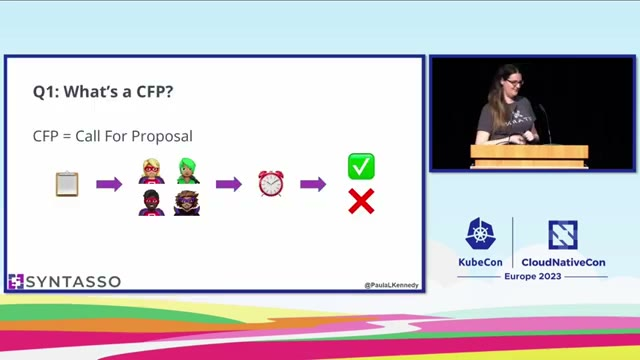
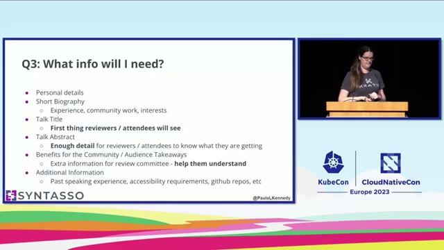
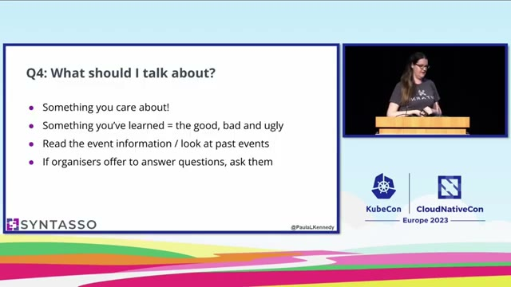
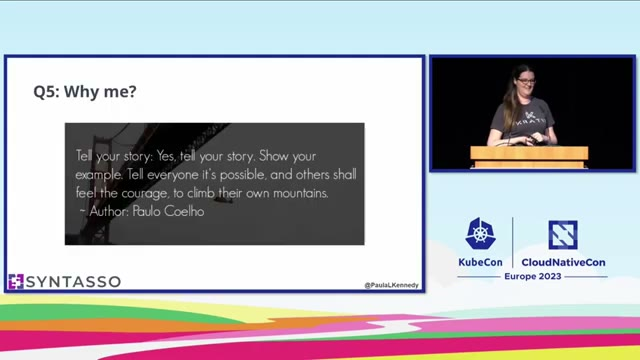

Writing a CFP that gets you on stage
Grounded in “FAQs for CFPs: A Beginner’s Guide to Conference Speaking”, a 5-minute lightning talk by Paula Kennedy (Syntasso) at KubeCon + CloudNativeCon Europe 2023. Every claim links to the exact moment in the talk. speech is what she said; slide is what was on screen.
1What a CFP actually is
CFP stands for “Call For Proposal.” It is, in Kennedy’s words, basically a form you fill in with loads of information 0:24speech. When a conference wants speakers, it opens its CFP and invites anyone to submit a talk idea.
Your form does not go straight onto the schedule. It goes to a committee, usually volunteers, who read thousands of submissions and decide whether each talk fits the event 0:32speech. That single fact shapes everything else in this lesson: you are writing for a tired human reviewer who has a huge pile to get through, so clarity wins.

2What the form actually asks for
A CFP asks for a fairly standard set of fields. Two of them carry most of the weight:
The talk title is the first thing reviewers and attendees look at, so make it something catchy 1:22speech. The talk abstract has to carry just enough detail that a reader knows what they are going to be getting 1:26speech. Most forms also ask what the community will get from your talk, the audience takeaways, which is how the committee understands what the talk is really about 1:30speech.

The professional move: once you have written this information, save it, because you can reuse it over and over for every CFP you apply to 1:38speech. Your bio and your standard abstract become a kit you tweak per event, not something you rewrite from scratch.
3What to talk about
The best talks Kennedy has seen are where people speak about something they are passionate about, something they care about, or something they have learned 1:49speech. That includes failure stories: sometimes when things go wrong, those are the best lessons people are interested to hear about 1:56speech.
Not sure what fits an event? Look at past talks to see what other talks at that conference have been about 2:05speech, and if the organizers offer to answer questions, contact them and just ask what kind of talks would be best 2:10speech.

4“Why me?” the doubt to push past
The thought that stops most first-time speakers: whatever you want to talk about, everyone has already talked about it. There are probably thousands and thousands of talks about Kubernetes 2:29speech. Kennedy’s answer: your story is different. No one has the same experience you have, no one has been on the same journey 2:31speech. Your version might be the one that inspires someone else to get up and tell their story 2:37speech.

Key terms
- CFP (Call For Proposal)
- The open form a conference uses to collect talk ideas from would-be speakers.
- Abstract
- The short description of your talk. Just enough detail that a reviewer knows what they’re getting.
- Audience takeaways
- What attendees will leave with. The field that tells the committee what your talk is really about.
Check yourself
- Who reads your submission, and what does that tell you about how to write it?
- Which single field do reviewers and attendees look at first?
- What should the abstract contain “just enough” of, and why not more?
- You think your topic is overdone. What is the one-line reason to submit anyway?
- What is the time-saving habit to build the moment you finish your first proposal?
Your turn (2 minutes)
Pick a thing you’ve learned or got wrong at work. Draft a catchy talk title plus a two-sentence abstract for it.
Then paste it back to me. I’ll react as a CFP reviewer skimming a pile of submissions: is the title catchy, does the abstract say clearly what I’d be getting, and are the audience takeaways obvious? We’ll tighten it together. Ask me anything that’s unclear, that’s what I’m here for.